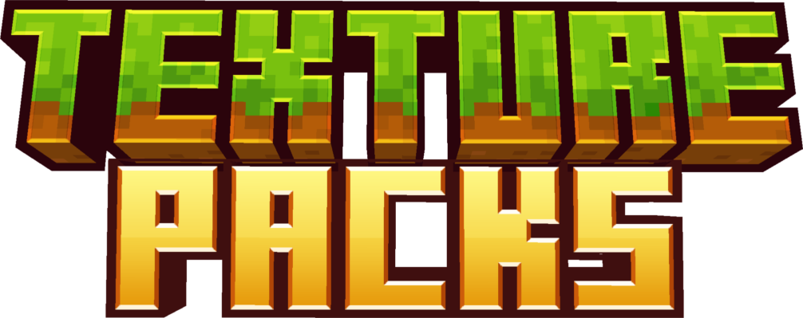
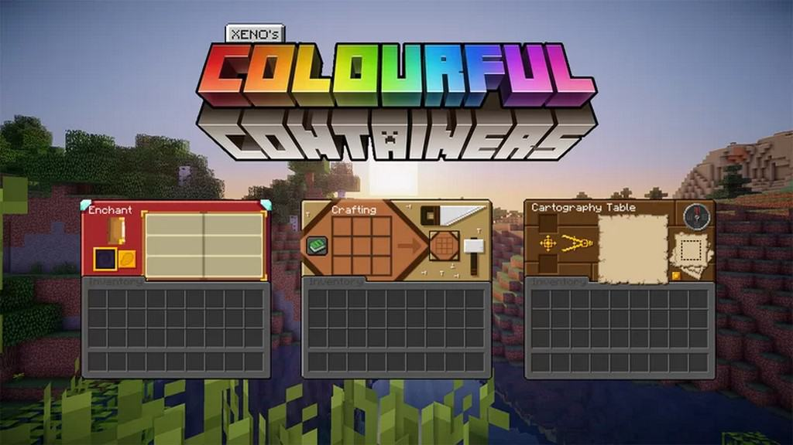
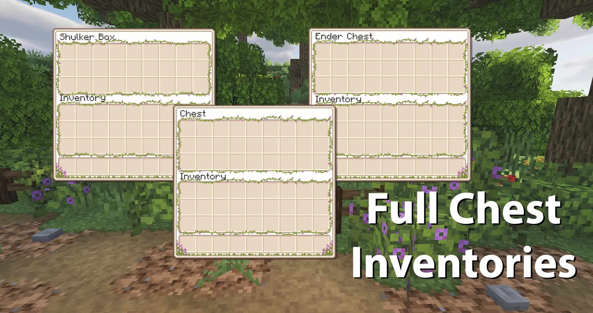
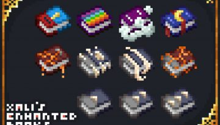
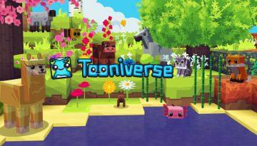
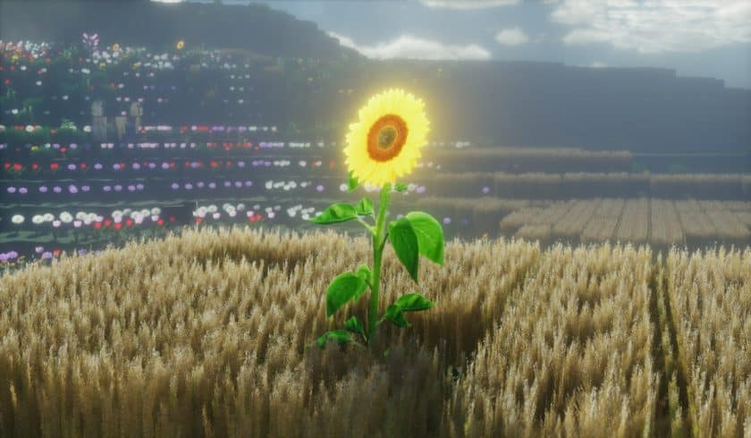
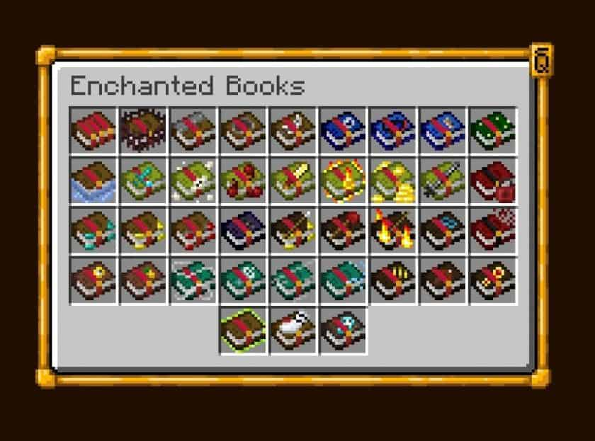
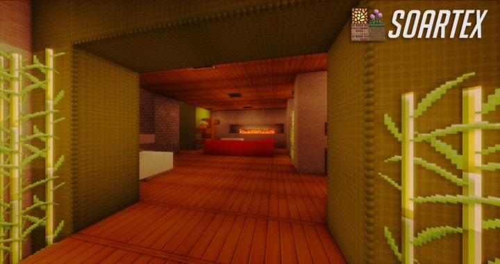
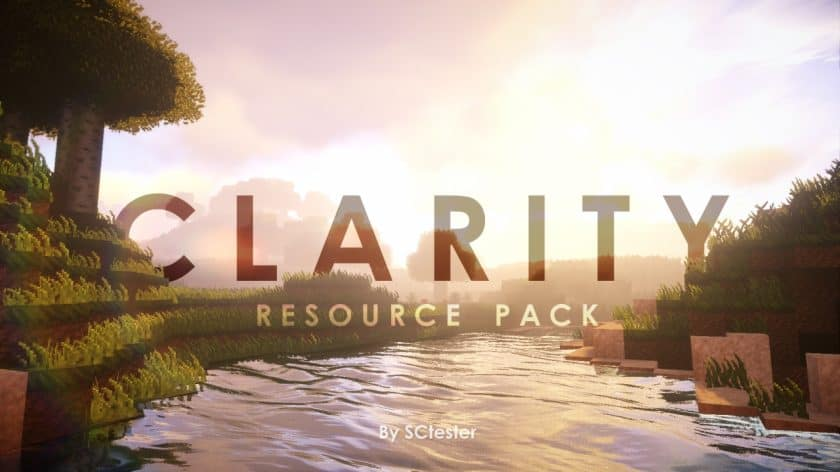
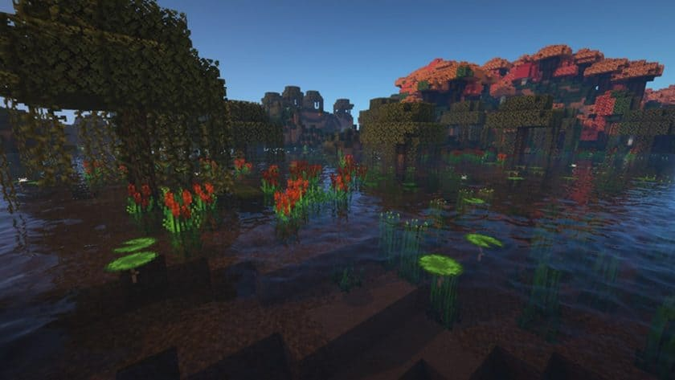

Colourful Containers GUI ResourcePack
This is the go-to resource pack for both new and veteran players who want to add a little change to Minecraft, but not a complete graphic overhaul. Colourful Containers GUI wwill modify a little bit of the game, and create a change for the better.

Overgrown Flowery GUI
You'll notice the novelties that this resource pack brings as soon as the game loads up. The entire menu has a purplish hue, including the buttons and the center logo itself. It also adds a frame with beautiful violas in the corners for a much more lively look.

Xalis Enchanted Books
Xalixilax created the Xalis Enchanted Books resource pack in May 2021, where it quickly gained fame among the Minecraft Community. It was recommended by many popular Minecrafters, which led the texture pack to be downloaded over 4.8 million times.

Tooniverse
The tooniverse resource pack is one of the many packs that aims to make Minecraft look more cartoonish and add a level of smoothness to the ingame textures. Fortunately, it manages to achieve this goal and with great success. The visuals in the Tooniverse texture pack seem very familiar. They were inspired by the visuals of modern-day cartoons.

Urban
The URBAN resource pack appears to be one of the few that manages to stir the interest of even the most veteran Minecraft players. The pack artist set himself on the ambitious path of completely changing how Minecraft looks, feels and plays.

Visual Enchantments ResourcePack
Visual Enchantments is one of the most popular Minecraft resource packs. You probably already know that one of the best features in a game titled Minecraft is the ability to enchant most items, including swords, bows and armor. The problem with enchantments in this game is that you can't visually see what kind of enchantment is being applied to that particular item.

Soartex Fanver - ResourcePack
The Soartex Fanver resource pack is one of the most downloaded texture packs of Minecraft. For the players, this is something quite pleasing to the eye and a refreshment for the blocky world. With the unique fusions of modern and classic textures, it has gathered a big section of its user base, because such overall looks of the game are much more attractive without far-reaching transformations in style typical for this game.

Clarity Resource Pack
The Clarity resource Pack is, without a doubt, one of the best resource pack that has been developed in recent times. With so many packs being developed every other day it is amazing just how clarity pack has managed to stand out. There is no single block or item that has not been thoroughly thought out.

BetterVanillaBuilding
BetterVanillaBuilding is a Minecraft's resource pack which is specially designed for builders, who wants more realistic textures which can transform their houses or building look much greater than they often do.